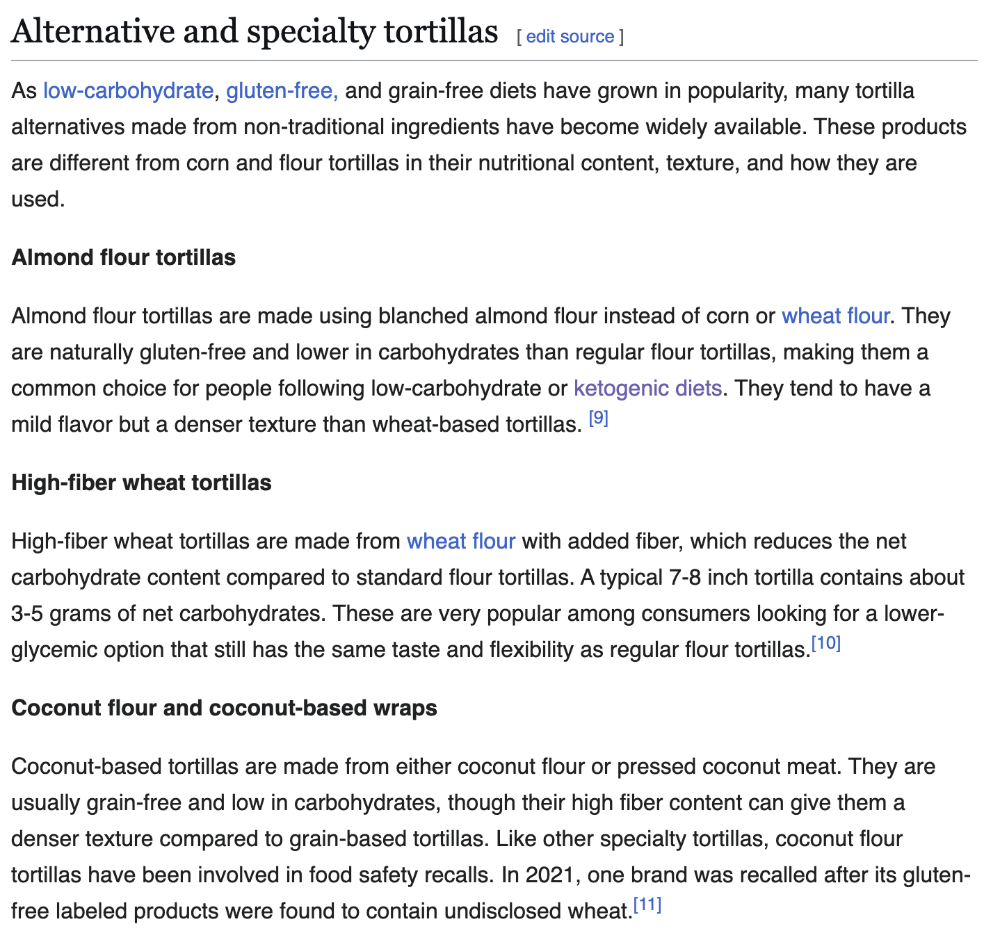
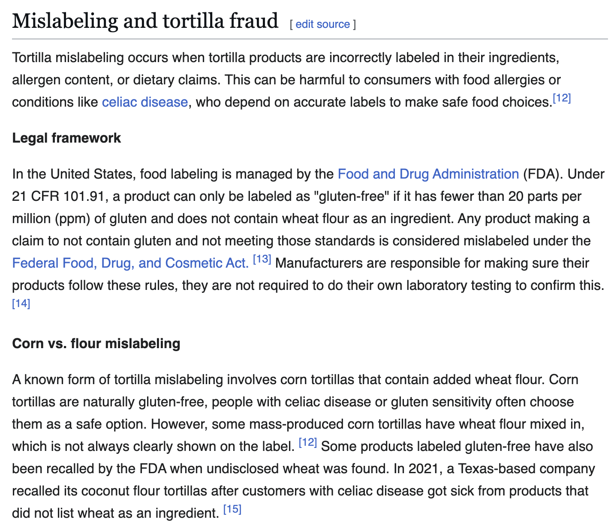

Enhancing the Wikipedia page on "Tortillas," connecting to my literature review's focus on Hispanic diets and cultural food practices. This project required writing for the largest public audience I've ever written for, following Wikipedia's strict community guidelines.
View my Wikipedia contribution using the link below.
Wikipedia Contribution
View on Wikipedia
I focused on adding information about alternative and specialty tortillas, as well as addressing the issue of mislabeling and tortilla fraud. I was also inspired to include the tortilla fraud section from the "Bread" article on Wikipedia because I found it interesting and relevant to the topic.

Alternative and Specialty Tortillas

Mislabeling and Tortilla Fraud
My audience was the global, English-reading, Wikipedia-using public.
The tone and style had to adhere to a completely external set of expectations — those set by the Wikipedia community.
The topic was not fully my choice — I had to work on something that the Wikipedia community actually wanted or needed.
The project has no real end date. Even though my semester will end, my work will stay in the encyclopedia and will be editable by the community forever.
I had to deal with being collaborative asynchronously with people I didn't know (the Wikipedia community).
I was contributing to the largest writing project ever and the largest human collaboration ever.
My audience for my Wikipedia contribution may be larger than my audience for anything I had ever written.
When I first started looking at potential topics, I considered the main larger topics in my research lit review. I wanted to edit some of the major articles like "Public Health", "Social Determinants of Health", or related topics, but since these articles were already well developed I had to take a different approach in my search. I ended up looking for more specific topics related to my research, and I found that the article on "Tortillas" was in need of some work. I focused on adding information about alternative and specialty tortillas, as well as addressing the issue of mislabeling and tortilla fraud. I was also inspired to include the tortilla fraud section from the "Bread" article on Wikipedia because it was something I found interesting and relevant to the topic, and I thought it would be a good addition to the article. I made sure to follow Wikipedia's guidelines for writing and editing, and I also made sure to cite my sources properly.
This project helped me develop the following writing skills:
I'd like to thank the following people for their support throughout this project:
I would like to thank Professor Musselman for her help throughout the drafting process for this project and for helping me brainstorm ideas for this project when I wasn't sure what I could meaningfully contribute to my Wikipedia article.
A great big thank you to my friend Sierra Johnson for looking over my work and suggesting I rearranged the order of my topics to help it flow better.
I didn't receive any suggestions or pushback from the Wikipedia community.